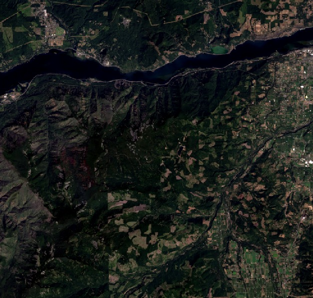
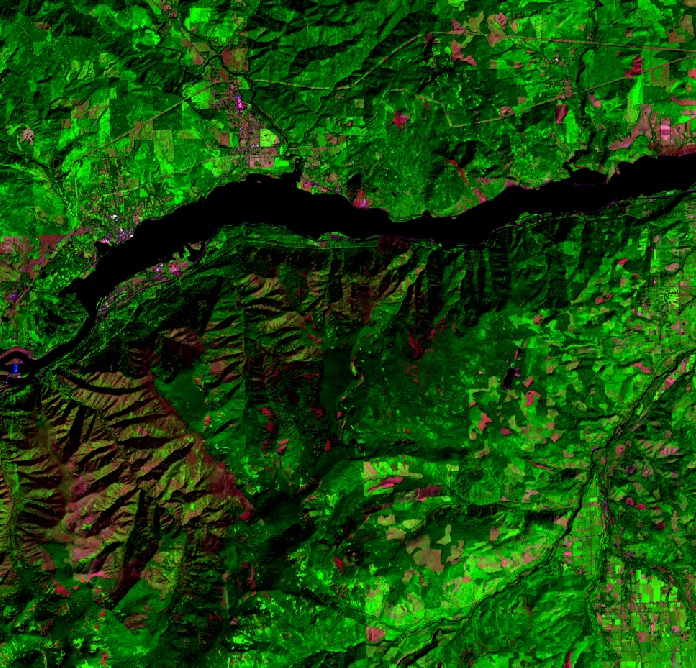

Lab one instructions
An Image is Worth at Least a Thousand Words
Summary
A useful tip when working with remote sensing data is to consider beginning your workflow by visualizing your data in true color. This can serve as reference prior to processing so that you can toggle the changes you make on and off and make semi-informed interpretations, at least at the beginning. There is SO much remote sensing data that is freely available but the go-to data source is often Landsat because of its historical record. It is also relatively easy to download Landsat imagery with different levels of processing (for example, surface reflectance vs top-of-atmosphere reflectance products vs analysis ready data), which can take a lot of steps out of the scientific process for us but means we have less influence how the processing is applied. Nonetheless the surface reflectance product from Landsat has been used in many studies, here is a good review paper.
As for data, I’ll provide USGS’s EarthExplorer for your reference, which is a simple, web-based archive of satellite and aerial imagery and indices from various sources. You will need to create an account to download data. You are not limited to EarthExplorer, there are other sources like The National Map, ArcGIS online, and Google Earth Engine (GEE). We will introduce (GEE) in future labs when we need more data.
Inside EarthExplorer, you can filter your data search spatially, temporally, and by cloud cover. Try to get logged on, drop a pin on or near Mount St Helens and define a date range and cloud cover percentage (lower cloud cover is great). [Check out this demo] for steps to download and visualize!

Software and tools
You will want to get familiar with the GIS software and your file structure if you are not already. I typically start a file structure like this:
rs_485/
─ lab_one/
├── input_data/ <– raw images, shapefiles
├── output_data/ <– processed imagery, CSVs
├── scripts/ <– useful in future labs
├── venv/ <– useful in future labs
└── writing/
Note that data in future labs may be uploaded to the R drive.
This lab relies on QGIS which is an open-source platform that we will use for most of our visualization and image manipulation. However, examples of different approaches techniques using alternative software R, GEE and Python are provided in future labs.
What you are going to submit
A PDF documenting the steps you took to create a true color and or false image composites from raw satellite imagery. This can be as detailed as you want, but you must obtain imagery from 5 distinct satellite or aerial sources, display and manipulate each image in QGIS (documenting your methods).
Screenshot of each image with brief description
Review advantages and disadvantages and which datasets might be useful as we continue to study the region
A brief reflection on the types of imagery you would use for specific studies
